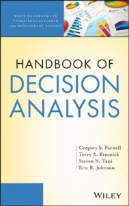

Knowledge Content Library
290
Facilitating Choices: Teaching the System to Change Without Resistance
Presented by Sharon Drew Morgen (Morgen Facilitations) at 2013 DAAG Conference in Austin. These talks explores the human side of decision-making and introduce perspectives that are complementary to decision analysis and have a proven record for success in business.
262
Insights from the Brain Sciences for Decision Professionals
Presented by Carl Spetzler (Strategic Decisions Group) at 2010 DAAG Conference in Orlando. Recent technological advances in brain imaging and insights into brain functioning provide new opportunities for uncovering the neurological underpinnings of mental functions including decision making.
continue to: decisionprofessionals.com
263
Nassim Taleb’s Black Swan and Decision Analysis
Presented by Jack Kloeber (Kromite) at 2010 DAAG Conference in Orlando. Discussion of Black Swan phenomena and how to incorporate into Decision Analysis.
219
Quantifying and Mitigating Splitting Biases in Value Trees
Presented by Sarah K. Jacobi and Benjamin F. Hobbs (Johns Hopkins University) at 2006 DAAG Conference in Baltimore. Discussion of biases due to how objectives hierarchies are set up and assessed in multi-objective problems and how splitting the trees impacts results.
continue to: decisionprofessionals.com
221
Should You Trust Your Gut? Psychological weaknesses in human beings when we try to make decisions in the face of uncertainty
Presented by Pat Leach (Decision Strategies) at 2006 DAAG Conference in Baltimore. Discussion of some common biases and how to use your intellect and gut to sort it out.
continue to: decisionprofessionals.com
205
Historic Studies on the Psychology of Decision Making
Presented by Jessica Hayden (Centacor) and Harry Eckerson (Decision Strategies) at 2005 DAAG Conference in Philadelphia. Discussion of many of the common biases that occur in decision making.
continue to: decisionprofessionals.com
208
Partition Dependence and Subjective Probabilities: Problem and Solution
Presented by Bob Clemen (Duke University) with Craig Fox and Canan Ulu at 2005 DAAG Conference in Philadelphia. Discusses various cognitive biases and innovative ways to minimize their occurrence and impacts.
continue to: decisionprofessionals.com
158
Handbook of Decision Analysis

by Gregory S. Parnell, Terry A. Bresnick, Steven N. Tani, Eric R. Johnson (SDP Fellows)
Fills a gap in decision analysis literature, featuring both soft personal/interpersonal skills and the hard technical skills involving mathematics and modeling.
Fills a gap in decision analysis literature, featuring both soft personal/interpersonal skills and the hard technical skills involving mathematics and modeling.
continue to: amazon.com
58
Value Focused Thinking
by Ralph Keeney (SDP Fellow)
A classic in the field of Decision Analysis, and for anyone seeking to make better decisions.
A classic in the field of Decision Analysis, and for anyone seeking to make better decisions.
continue to: amazon.com
154
Making Hard Decisions
by Robert T. Clemen (SDP Fellow) and Terence Reilly
Updated 3rd edition, with software and tutorials in Palisade's DecisionTools Suite.
Updated 3rd edition, with software and tutorials in Palisade's DecisionTools Suite.
continue to: cengagebrain.com
159
The Principles and Applications of Decision Analysis (the "Blue Books")
by Ronald A. Howard and James Matheson (SDP Fellows)
Classic reference, 2 volumes. The link below will take you to the Amazon link, and to a full description with links to some of the chapters.
Classic reference, 2 volumes. The link below will take you to the Amazon link, and to a full description with links to some of the chapters.
164
Uncertainty: A Guide to Dealing with Uncertainty in Quantitative Risk and Policy Analysis
by M. Granger Morgan and Max Henrion (SDP Fellow)
A guide to dealing with uncertainty in quantitative risk and policy analysis.
A guide to dealing with uncertainty in quantitative risk and policy analysis.
continue to: amazon.com
165
Thinking, Fast and Slow
by Daniel Kahneman
A must read for decision professionals
A must read for decision professionals
continue to: amazon.com
166
Decision Traps: The Ten Barriers to Decision-Making and How to Overcome Them

by J. Edward Russo and Paul Schoemaker
Barriers to making good decisions and guidance on how to overcome them.
Barriers to making good decisions and guidance on how to overcome them.
continue to: amazon.com
167
The Flaw of Averages: Why We Underestimate Risk in the Face of Uncertainty
by Sam L. Savage
Describes common avoidable mistakes in assessing risk in the face of uncertainty.
Describes common avoidable mistakes in assessing risk in the face of uncertainty.
continue to: amazon.com
169
The Signal and the Noise
by Nate Silver
Why so many predictions fail - but some don't.
Why so many predictions fail - but some don't.
continue to: amazon.com
171
Decisive: How to Make Better Choices in Life and Work

by Chip Heath and Dan Heath
Chip Heath takes off from where Daniel Kahneman left off in Thinking Fast and Slow and offers solutions to work with our biases and not let them misguide us.
Chip Heath takes off from where Daniel Kahneman left off in Thinking Fast and Slow and offers solutions to work with our biases and not let them misguide us.
continue to: amazon.com
175
Judgment Under Uncertainty: Heuristics and Biases
by Daniel Kahneman, Paul Slovic, Amos Tversky
A collection of classic articles on this important subject.
A collection of classic articles on this important subject.
continue to: amazon.com
349
Choices, Values, and Frames

by Daniel Kahneman and Amos Tversky
Choices, Values, and Frames presents an empirical and theoretical challenge to classical utility theory, offering prospect theory as an alternative framework.
Choices, Values, and Frames presents an empirical and theoretical challenge to classical utility theory, offering prospect theory as an alternative framework.
continue to: amazon.com
176
The Black Swan: The Impact of the Highly Improbable

by Nassim Nicholas Taleb
With a new section: On Robustness and Fragility.
With a new section: On Robustness and Fragility.
continue to: amazon.com